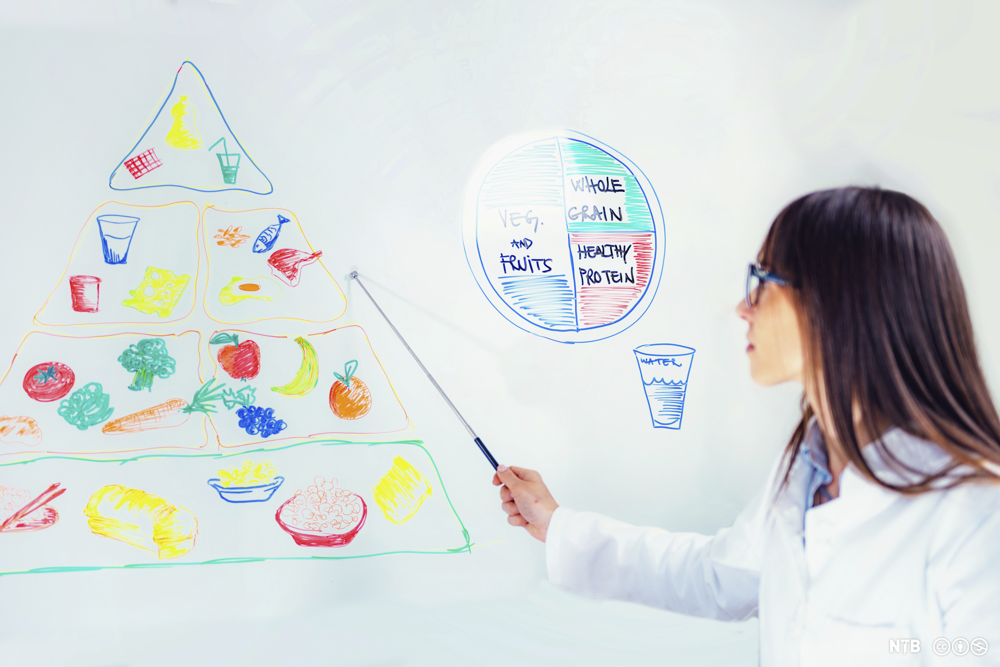

Mer info

Næringsstoffer, av Library, S. P., NTB. (https://ndla.no/article/13791). CC BY-NC 4.0.
Suljost er en helt ny oppskrift laget av meg. Målet var å lage en rett som inneholdt alle de energigivende næringsstoffene, og i riktig mengde. Det anbefalte inntaket av de forskjellige energigivende næringsstoffene er 50% karbohydrater, 35% fett og 15% protein. Med min oppskrift får du nøyaktig 50% kalorier, 35% fett og 15% protein. Du får i tillegg mange andre viktige næringsstoffer som 2,2µg vitamin B-12, 296µg vitamin A, 72mg kalium, 730mg kalsium, 5,6g Omega-3, 50,4g Omega-6, 41µg jod, 480mg natrium og 550mg fosfor.